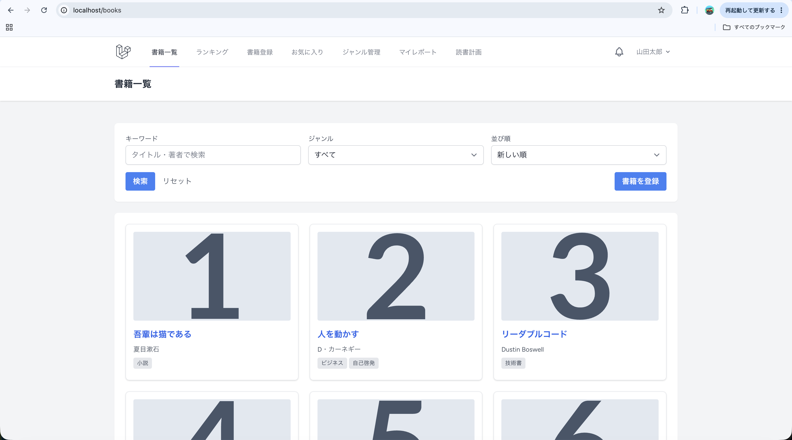
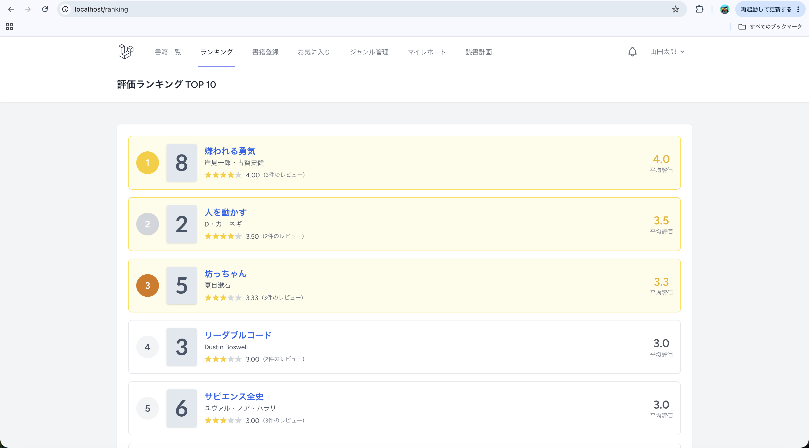

book_shelf
本のレビューを投稿し、コメント・いいねで交流できるWebアプリ
- 機能
- レビュー投稿 / コメント / いいね / 一覧・集計表示
- 技術
- PHP、Laravel、MySQL、phpMyAdmin、Docker
- 担当
- バックエンドの実装
オンラインスクールの課題として開発。フロントエンド（resources）は課題で提供されたものを使用しています。
工夫した点
要件定義書をもとに、初めてシステム設計から取り組みました。画面を作る前に利用者・利用シーン・権限を整理し、実際の運用で起こり得る重複登録や誤操作を想定して、次のように実装しました。
- 同じユーザーが同じレビューに2回いいねできないよう、
review_likesテーブルに（review_id, user_id）の複合ユニーク制約を設定 - レビューの編集・削除は投稿者本人だけができるよう、Policyで権限を制御
- 評価は1〜5の整数、コメントは1000文字以内など、FormRequestで入力値を検証
- 主要なコントローラーごとにPHPUnitのFeatureテストを作成
苦労した点・学び
当初は機能を実装することに意識が向き、機能間の依存関係や実装の順序を整理しきれていなかったため、開発中に作業順で迷うことがありました。この経験から、コーディングを始める前に開発手順と優先順位を明確にすることの重要性を学びました。

